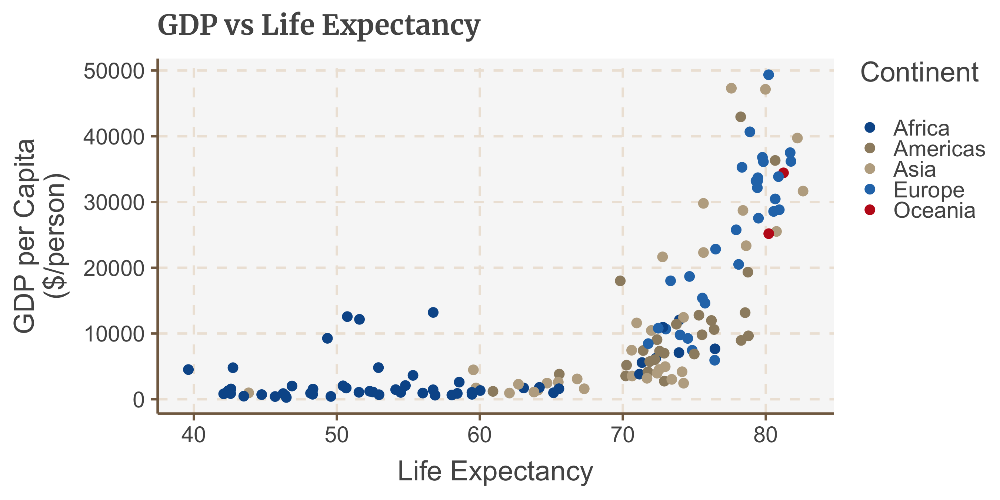

This repo contains the functions of the FlwomindeR package, which once installed locally, provides helpful functions for creating and exporting graphics made in ggplot which match the Flowminder style guide.
ggplot
FlowmindeR is not on CRAN, so you will have to install it directly from Github using remotes.
If you do not have the remotes package installed, you will have to run the first line in the code below as well.
# install.packages('remotes') remotes::install_github('Flowminder/FlowmindeR')
Detailed examples on how to use the functions included within the FlowmindeR package to produce graphics are included in the full vignettes, as well as a more general reference manual for working with ggplot2.
set_fm_style(): has no arguments and used to set the default ggplot themes. What it does is generally makes text size, font and colour, axis lines, axis text and many other standard chart components into the Flowminder style.
The function is pretty basic and does not change or adapt based on the type of chart you are making, so in some cases you will need to make additional theme arguments in your ggplot chain if you want to make any additions or changes to the style, for example to add or remove gridlines etc.
Example of how it is used in a standard workflow:
library(ggplot2) library(gapminder) # Used as example data library(tidyverse) #> ── Attaching packages ──────────────────────────────────────────────────────────────── tidyverse 1.3.0 ── #> ✓ tibble 3.0.1 ✓ dplyr 0.8.5 #> ✓ tidyr 1.0.2 ✓ stringr 1.4.0 #> ✓ readr 1.3.1 ✓ forcats 0.5.0 #> ✓ purrr 0.3.4 #> ── Conflicts ─────────────────────────────────────────────────────────────────── tidyverse_conflicts() ── #> x dplyr::filter() masks stats::filter() #> x dplyr::lag() masks stats::lag() # Set the defaults set_fm_style() gapminder_2007 <- gapminder %>% filter(year == 2007) ggplot(gapminder_2007, aes(x = lifeExp, y = gdpPercap, colour = continent)) + geom_point() + labs(x= "Life Expectancy", colour = "Continent", y = "GDP per Capita\n($/person)", title = "GDP vs Life Expectancy")
